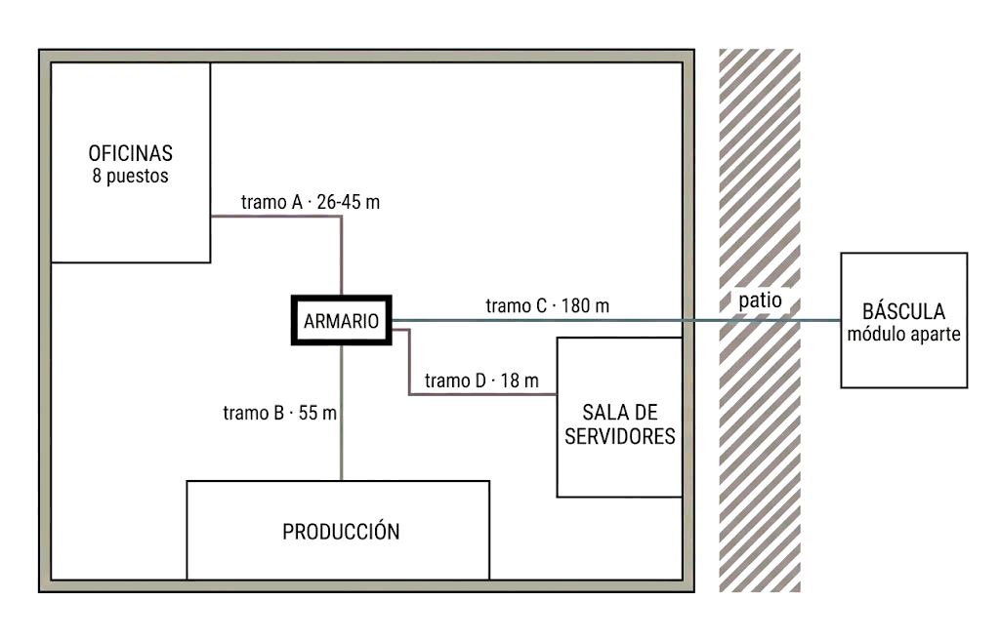

El encargo
Logística Berrocal amplía su nave y te pide el proyecto de cableado. Hay cuatro tramos y no se parecen en nada entre sí. Para cada uno tienes que elegir el medio, justificarlo con cifras y dejarlo presupuestado.
El plano del cliente

┌──────────── NAVE PRINCIPAL ─────────────┐
│ │
OFICINAS │ 8 puestos │
(planta │ ╲ │
alta) │ ╲ ARMARIO │ ░ patio ░
│ ╲ ▓▓▓ ◀── tramo D ── SALA │ ░ 180 m ░
│ ╲ ▓▓▓ SERVIDORES│ ░ ░
│ tramo A ─╲ ▓▓▓ │ ░ ░
│ ╲▓▓▓ ◀──── tramo B ──── ZONA │ ░ ░
│ ◀──── tramo C ─────────────────▶ BÁSCULA
└──────────────────────────────────────────┘ (módulo
aparte)| Tramo | Qué conecta | Distancia | Entorno | Necesidad |
|---|---|---|---|---|
| A | Armario → 8 puestos de oficina en la planta alta | 26, 29, 31, 34, 36, 38, 41 y 45 m | Falso techo limpio, sin maquinaria | 1 Gbps hoy; quizá 2,5 en unos años |
| B | Armario → puesto de control de la zona de producción | 55 m | Bandeja paralela a la alimentación de dos variadores de frecuencia y un puente grúa | 1 Gbps |
| C | Armario → módulo de báscula, al otro lado del patio | 180 m, edificio separado con su propia acometida eléctrica | Exterior, por canalización enterrada | 100 Mbps bastan |
| D | Armario → sala de servidores, misma planta | 18 m | Interior, sala climatizada | 10 Gbps |
Datos para los cálculos
- Enlace Ethernet: máximo 100 m, de los que 90 m son de cableado fijo.
- Holgura de cable: 10 %. Bobinas de 305 m.
- Fibra: multimodo 3 dB/km, monomodo 0,4 dB/km, par de conectores 0,75 dB, margen 3 dB.
- Transceptores: SX multimodo, 12 dB de presupuesto; LX monomodo, 10,5 dB.
- Categorías: Cat 6 hasta 1 Gbps holgado; Cat 6A para 10 Gbps a 100 m.
Lo que hay que entregar
- El medio elegido para cada tramo, con su justificación.
- Los números que la sostienen: metros, decibelios o categoría.
- El presupuesto de materiales del tramo A.
- El plano con los cuatro tramos y sus medios, en papel o en digital.
💡 Opcional: el plano con FossFLOW
FossFLOW permite dibujar el plano en isométrico desde el navegador (código fuente). Es opcional: se evalúa el plano, no la herramienta, y el papel basta para aprobar.
- No guarda sola: usa Export File antes de cerrar.
- No uses «Server Storage»: sube el diagrama al servidor de un tercero.
Recuerda que FossFLOW dibuja; Packet Tracer, que verás más adelante, simula.
Resultados
0%
Apartados correctos: 0 / 0
Apartados incorrectos: 0
Criterios de finalización
- Has elegido medio para los cuatro tramos y puedes justificar cada uno con al menos dos criterios.
- Has comprobado las distancias frente al límite de 100 m.
- Has calculado el presupuesto óptico del tramo que lo necesita.
- Tienes el presupuesto de materiales del tramo A y el plano de los cuatro.